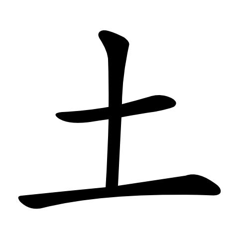
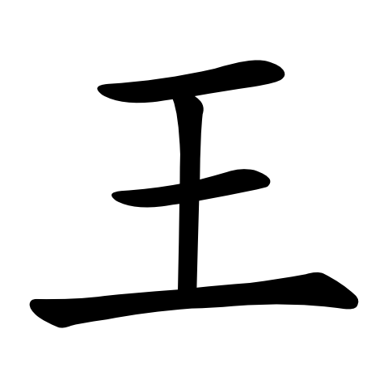
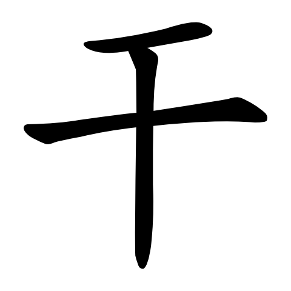
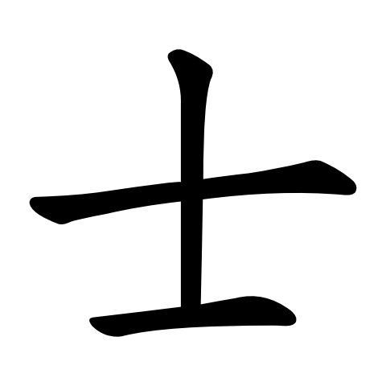
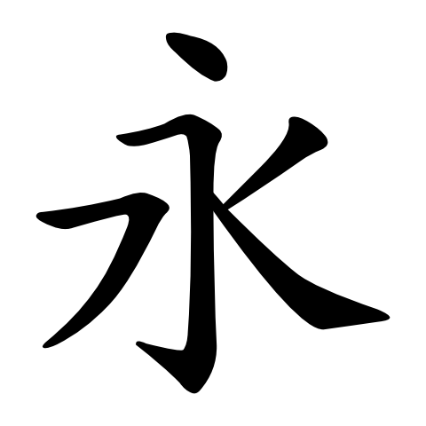

检查一种模板如何适配不同长度，以及哪些整字笔画仍需人工处理。
此批用于验证软件流程。横、竖参考来自“一二三十工”；保留测试字为“土王干士永”。字体中线同时参与候选和参考，评价不独立，不能据此认定书法质量、真实笔锋轨迹或磁响应迁移。
解析路径的头尾由固定坐标规则定义，主体跨度分别为 40、80、140 px。打开后勾选“整体缩放”比较；它们不是书法样本。
3 笔已适配；0 笔未支持

4 笔已适配；0 笔未支持

3 笔已适配；0 笔未支持

3 笔已适配；0 笔未支持

0 笔已适配；5 笔未支持

每页均可编辑并下载标注。缺模板和受限形变会逐笔保留原因；没有时间、磁目标或 Z。